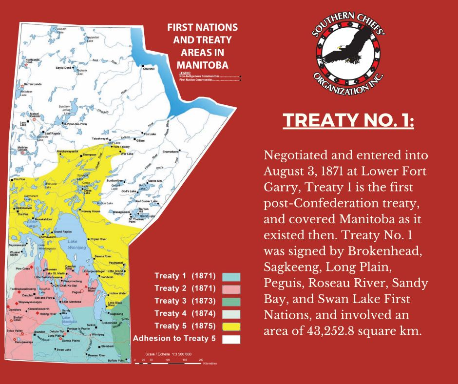

Where Was Treaty 1 Negotiated?
The Treaty was negotiated at Lower Fort Garry, located just north of Winnipeg, Manitoba. It was chosen for its significance as a Hudson's Bay Company trading post back then and its accessible location for both Indigenous representatives and the Crown.
{kind=link}
Map of Treaty 1 Territory
Context Map:
Communities Involved in Treaty 1
- Anishinaabe (Ojibwe) – A First Nations people in Manitoba and Ontario
- Muskegon Cree – A Cree-speaking Indigenous group in the region
- First Nations that are part of Treaty 1 include Peguis, Brokenhead, Roseau River, Long Plain, Sandy Bay, Swan Lake, and Fort Alexander
What Makes Treaty 1 Unique?
Treaty 1 was the first of the Numbered Treaties and set the standard for future agreements. However, it has also been heavily contested due to the gap between oral and written agreements. The Indigenous perspective includes promises that were not written down, which were known as "outside promises." These parts that were't added continue to be points of legal and political discussion today.
How Is Treaty 1 Implemented Today?
Treaty 1 still plays a role in shaping land ownership and Indigenous-Crown relations today. Urban reserves are a prime example of modern Treaty implementation.
Examples of Urban Reserves and Economic Growth:
- Kapyong Barracks Urban Reserve In Winnipeg, a former military base is being developed into a urban reserve for economic growth.
- Long Plain First Nation Gas Station – Located in Winnipeg, this gas station on an urban reserve supports jobs and Indigenous business ownership.
- Madison Urban Reserve – Another Long Plain First Nation initiative, hosting Indigenous services and offices.